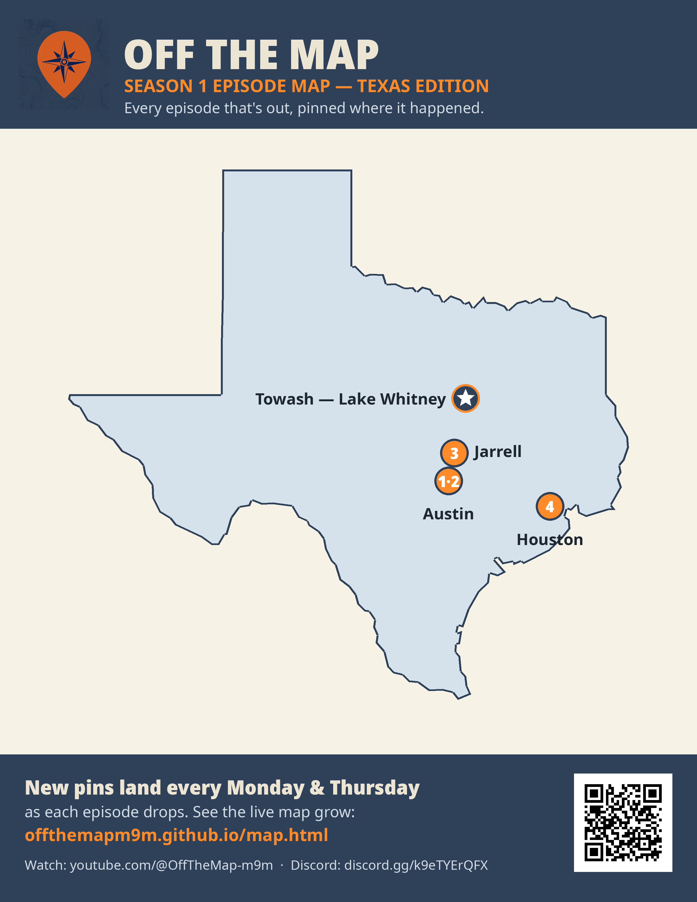

Fun & Games
The between-episodes stuff: a map worth staring at, a question worth arguing over, and a place to guess. New rounds land Wednesdays — and the live versions run all week in our Discord.
🗺️ Map of the Week
Our own Season 1 Texas map

First Map of the Week is the home turf: every Texas episode that's out, pinned where it happened — Austin (Eps 1–2), Jarrell (Ep 3), Houston (Ep 4), and the Towash star at Lake Whitney. Like our episode map, it only pins what's already aired. Print it free (PDF) or watch the live map grow every Mon & Thu.
❓ Trivia of the Week
Why is the top border of the Texas Panhandle a perfectly straight line at exactly 36°30′ north latitude — and what 1820 law about slavery drew it there?
Think it over, argue it out in Discord #💬・general — the answer lands Friday.
🌍 Where in the World?
Guess the mystery spot from the clues:
- It was a real Texas town — cotton gin, school, churches, the works.
- In 1951 the government bought it, moved the graves, and let the water in.
- On calm days, boaters float right over its main street.
- Our Halloween Short told its story.
🎉 Milestones
- ✅ Oct 22, 2026 — First episode live: "Why Texas Has Its Own Power Grid"
- ✅ Oct 26, 2026 — Season 1 rolling, new episodes every Mon & Thu
- ✅ Nov 3, 2026 — Passed 10 YouTube subscribers
- ✅ Nov 4, 2026 — Podcast launched on Spotify
- ✅ Nov 4, 2026 — 18 products in the shop (shirts, hoodies, and a sticker)
- ⬜ 25 YouTube subscribers
- ⬜ 10 Discord members
- ⬜ First merch sale
- ⬜ Feb 1, 2027 — Episode 30 finale premiere
Checked off as they happen — the same board runs in Discord #🎉・milestones.